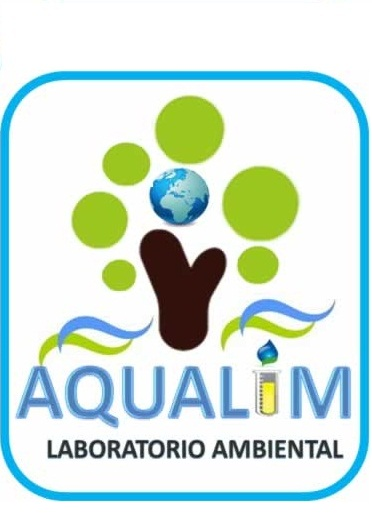

Aqualim
Buscamos siempre el mejoramiento continuo y cumpliendo con todos los requisitos legales para garantizar a nuestros clientes la validez de los resultados emitidos.
Aqualim, laboratorio ambiental líder en el oriente colombiano, comprometido con el mejoramiento de la calidad de los recursos y preservación del medio ambiente de los llaneros. Trabajamos con calidad, honestidad y resultados confiables.
Acreditación al Laboratorio Aqualim para producir información cuantitativa, física, química y microbiologica para los estudios o análisis requeridos por las autoridades ambientales.
ACREDITACIONES
Resolución 1411 de 2021 Resolución 1353 de 2016 Resolución 2729 de 2015 Resolución 1217 2013 Resolución 0458 2013 Resolución 2371 2012 Resolución 0590 2010Por lo cual se autorizan a los laboratorios para la realización de análisis físicos, químicos y microbiológico al agua para consumo humano.
RESOLUCIONES
Resolución 0172 de 2022 Resolución 2625 de 2019 Resolución 1615 2015 PICCAP Resolución 4353 2013 PICCAP Resolución 431 2012 PICCAP Resolución 5554 2010 PICCAP